د. إيهاب محمود ابراهيم
استشاري طب وجراحة الأسنان
🎓 الدراسات العليا والتدريب
-
الزمالة المصرية في طب أسنان الأسرة
حاصل على الزمالة المصرية في طب أسنان الأسرة في يناير 2012 - فبراير 2015.
أنهيت مدة التدريب 3 سنوات في الزمالة المصرية في طب أسنان الأسرة.
تهدف الزمالة المصرية في طب الأسنان إلى تحقيق التميز في تقديم الخدمات الصحية الآمنة من خلال برامج تدريب مهنية تخصصية لتخريج أخصائي متميز قادر على توفير الرعاية الصحية المتميزة استناداً إلى أفضل الأدلة المتاحة، والتي يعتبر المريض محورها وغاية اهتمامها، قائداً للفريق الصحي وعضواً فيه ومشاركاً في الأبحاث الصحية وملتزماً بالتعلم مدى الحياة، وساعياً دوماً لتطبيق المعايير الأخلاقية والمهنية المثلى. وهو برنامج تدريبي علمي وعملي مهني إكلينيكي يهدف إلى تعزيز تقديم الخدمات الصحية المختلفة بقدر عالٍ من الدقة والتميز في مختلف فروع الطب والصحة العامة. -
دبلوم إدارة الجودة الشاملة في الرعاية الصحية (TQM) من AUC
حاصل على دبلوم إدارة الجودة الشاملة في الرعاية الصحية (TQM) من الجامعة الأمريكية بالقاهرة (AUC).
الفترة: مارس 2014 - أبريل 2015.
البرنامج معتمد من الجامعة الأمريكية بواشنطن بالتعاون مع الرابطة الدولية للتعليم المستمر والتدريب. يهدف البرنامج إلى الإلمام بدور وأهمية إدارة الجودة الشاملة في المنشآت الصحية، والبنية التحتية للجودة، وتكاليف الجودة، وكذلك المواصفة الدولية ISO 9001 والمواصفة 45001 OHSAS الخاصة بنظام إدارة السلامة والصحة المهنية، والمواصفة الدولية ISO 19011/2018 الخاصة بمراجعات نظم الإدارة، ومنهجية الكايزن، ومنهجية الستة سيجما، ومعايير التميز المؤسسي طبقاً للمنهج الأوروبي. -
دبلوم إدارة المنظمات الصحية من أكاديمية السادات بالقاهرة
حاصل على دبلوم إدارة المنظمات الصحية من أكاديمية السادات بالقاهرة - ديسمبر 2019.
تهدف الدبلومة إلى تنمية مهارات المتدربين بالأسس الحديثة في إدارة المستشفيات وتنظيم المنشآت الصحية، وتعريف المتدرب بأهمية إدارة المستشفيات، وطريقة تخطيط وتنظيم وتقييم المستشفيات في ظل التطبيقات الحديثة للمنظمات الطبية. كما تتيح للمتدرب اكتساب المهارات الإدارية والقيادية وإعداد الخطط والدراسات اللازمة لإدارة المستشفى أو إحدى الأقسام التابعة لها وفقاً للمتطلبات المتغيرة والمتجددة في مجال إدارة الرعاية الصحية. -
برنامج تدريب المعلمين من كلية الطب جامعة هارفارد (T2T)
تم قبولي للانضمام إلى برنامج تدريب المعلمين للدفعة C 2022. هذه منحة مقدمة من وزارة الصحة والسكان المصرية بالتعاون مع كلية الطب بجامعة هارفارد، وانتهت في يونيو 2024. تم الانتهاء من الدورة التدريبية لتدريب المدربين من جامعة هارفارد ضمن المنحة المقدمة من وزارة الصحة والسكان.
📜 الدورات التدريبية والشهادات
- دورة تدريبية من الهيئة العامة للاعتماد والرقابة على معايير GAHAR الخاصة بالمستشفيات – ديسمبر 2024.
- دورة تدريبية بعنوان "الرعاية المرتكزة حول المريض للرعاية الأولية" من 24 إلى 26 سبتمبر 2023.
- دورة تدريبية بعنوان "معايير إدارة الموارد البشرية وتشكيل اللجان بالمستشفيات" من 19 إلى 20 سبتمبر 2023.
- دورة تدريبية بعنوان "معايير إدارة وسلامة الدواء" من 21 إلى 22 أغسطس 2023.
- دورة تدريبية بعنوان "إدارة تكنولوجيا المعلومات" من 14 إلى 15 أغسطس 2023.
- دورة تدريبية بعنوان "تدريب خارطة طريق توحيد الجودة (الموجة الإدارية)" من 18 إلى 21 مارس 2023.
- شهادة حضور محاضرة بعنوان "تحسين عمل حشو العصب خبرة 43 عام" في 24 فبراير 2023.
- دورة تدريبية بعنوان "الرعاية الصحية: المستوى الأول من معايير الجودة" من 6 إلى 10 فبراير 2022.
- دورة تدريبية بعنوان "جودة الرعاية الصحية: إدارة المخاطر" من 14 إلى 16 ديسمبر 2021.
- دورة تدريبية بعنوان "جودة الرعاية الصحية: القيادة والموارد البشرية" أيام 4 و8 و9 ديسمبر 2021.
- دورة تدريبية بعنوان "جودة الرعاية الصحية: إدارة المرافق" من 5 إلى 7 ديسمبر 2021.
- دورة تدريبية بعنوان "CBC; What Behind the Figures?" من 26 إلى 27 يوليو 2021.
- دورة تدريبية بعنوان "جودة الرعاية الصحية: معايير أمان وسلامة المريض (سلامة الأدوية وسلامة التدخلات الجراحية)" من 2 إلى 3 يونيو 2021.
- دورة تدريبية بعنوان "جودة الرعاية الصحية: خطة تحسين الجودة ومؤشرات الجودة" من 30 مايو إلى 2 يونيو 2021.
- دورة تدريبية بعنوان "خطة السلامة البيئية بالمستشفيات (مكافحة الحريق – صيانة الأجهزة الطبية – المواد الخطرة والنفايات)" من 24 إلى 25 مايو 2021.
- دورة تدريبية بعنوان "جودة الرعاية الصحية: إدارة المخاطر وإدارة المعلومات" من 10 إلى 13 يناير 2021.
- دورة تدريبية بعنوان "متطلبات تحسين الجودة والسلامة" من 15 إلى 18 ديسمبر 2020.
- دورة تدريبية بعنوان "خطة السلامة البيئية بالمستشفيات" من 21 إلى 23 يناير 2020.
- أكمل واجتاز بنجاح برنامج القيادة (القيادة الفعالة – إدارة الأزمات – التخطيط) في يناير 2020.
- برنامج إعداد القادة يومي 17 و24 يناير 2020.
- دورة تدريبية بعنوان "جودة الرعاية الصحية: معايير أمان وسلامة المريض" من 14 إلى 16 يناير 2020.
- دورة تدريبية بعنوان "القوانين واللوائح والقرارات لمقدمي الرعاية الصحية في المستشفيات" من 17 إلى 21 نوفمبر 2019.
- دورة تدريبية بعنوان "أساسيات ومفهوم جودة الرعاية الصحية، وأدوات الجودة وتحسين الإجراءات في قطاع الصحة والمؤشرات" في 14 و16 و21 أبريل 2019.
- حضور الدورة التدريبية التعريفية الخاصة بمعايير الجودة وأمان المريض وتسجيل المنشآت الصحية بمنظومة التأمين الصحي الشامل من هيئة الاعتماد والرقابة الصحية من 9 إلى 11 أبريل 2019.
- شهادة حضور المؤتمر الثاني والعشرين لدمياط لطب الأسنان 2018.
- دورة تدريبية بعنوان "جراحات الفم والأسنان الصغرى" من 5 إلى 6 أكتوبر 2018.
- شهادة حضور المؤتمر الحادي والعشرين لدمياط لطب الأسنان من 5 إلى 7 أكتوبر 2017.
- ورشة عمل تدريب مدربين جودة بالمعهد القومي للتدريب من 22 إلى 24 أبريل 2017.
- دورة تدريبية بعنوان "خطوات حل المشكلات" من 2 إلى 7 أبريل 2016.
- حضور دورة من كلية الطب بجامعة هارفارد عن معلومات وموارد للتعامل مع السلوك الإدماني في يوليو 2015.
- دورة تدريبية بعنوان "الهندسة الوراثية والخلايا الجذعية في مجال طب الأسنان" في 24 فبراير 2009.
💼 الخبرات العملية
-
مستشفى 6 أكتوبر الجامعي
طبيب أسنان.
فترة العمل: من 1/9/2008 إلى 15/7/2009. -
مستشفى دمياط العام
طبيب أسنان.
فترة العمل: من 15/7/2009 إلى 30/8/2009. -
مستشفيات القوات المسلحة – الفرقة 16 مشاة
الكتيبة الطبية - سرية طب الأسنان.
طبيب أسنان.
فترة العمل: من 1/4/2010 حتى 1/6/2011. -
إدارة كفر سعد الصحية - المركز الحضري بكفر سعد
طبيب أسنان.
فترة العمل: من 1/6/2011 إلى 5/2/2012. -
برنامج الزمالة المصرية لطب الأسنان
طبيب أسنان.
عمل بمركز أبحاث الأسنان بسموحة بالإسكندرية خلال الفترة من 2/5/2012 إلى 26/2/2013.
ثم عمل بمستشفى طلخا المركزي بالمنصورة خلال الفترة من 26/2/2013 إلى 1/3/2015. -
مديرية الشئون الصحية بدمياط - مستشفى كفر البطيخ المركزي
طبيب أسنان.
فترة العمل: من 1/3/2015 إلى 1/2/2016.
ثم رئيس فريق الجودة بالمستشفى خلال الفترة من 1/2/2016 إلى 1/3/2016. -
مديرية الشئون الصحية بدمياط
عضو فريق الجودة بديوان مديرية صحة دمياط.
من 1/3/2016 حتى فبراير 2017.
مدير إدارة الجودة بديوان مديرية صحة دمياط.
من فبراير 2017 وحتى الآن.
الإشراف على المدينة الشبابية والمخصصة للحجر الصحي برأس البر بجانب أعماله، بالقرار رقم 28 لسنة 2020.
عضو اللجنة القائمة على إدارة وتنسيق حالات كورونا بمديرية الصحة بدمياط.
الإشراف على مراكز اللقاح والفرق المتنقلة الخاصة بفيروس كورونا بمحافظة دمياط بجانب أعماله، بالقرار رقم 28 لسنة 2021.
مسؤول متدربي الزمالة المصرية بالزمالة الفرعية بجانب أعماله خلال الفترة من 7/2020 حتى 12/2023. -
الخبرة المهنية
خبرة عملية منذ التخرج تبلغ ستة عشر (16) سنة حتى الآن، تشمل العمل كطبيب أسنان وأخصائي جودة. -
التسجيل بالنقابة
مسجل بجدول أخصائي طب وجراحة الفم والأسنان بالنقابة العامة لأطباء الأسنان منذ عام 2019.
مسجل بجدول أخصائي جودة بالنقابة العامة لأطباء الأسنان منذ عام 2019.
⭐ أحداث وإنجازات مهمة
- تنفيذ مشروع كايزن الياباني على خمسة مستشفيات بمحافظة دمياط عام 2017.
- الإشراف على الحجر الصحي (المدن الشبابية) لمصابي فيروس كورونا (كوفيد-19) على مستوى محافظة دمياط بالقرار رقم 28 لسنة 2020، مع علاج أكثر من 1200 حالة دون تسجيل أي حالات وفاة.
- الإشراف على مراكز اللقاح والفرق المتنقلة الخاصة بفيروس كورونا بمحافظة دمياط بالقرار رقم 28 لسنة 2021، مع تحقيق المستهدف من المحافظة في التطعيم بلقاح كورونا.
- مندوب محافظة دمياط بغرفة الأزمات خلال أزمة فيروس كورونا عام 2020.
- مندوب إقليمي بغرفة الأزمات خلال انتخابات مجلس الشيوخ عام 2021.
- مشرف عام على مقرات توزيع اللقاح بمحافظة دمياط منذ مارس 2021 وحتى تاريخه.
- مسؤول متدربي الزمالة المصرية بالزمالة الفرعية بمديرية الشؤون الصحية بدمياط.
🏆 التكريم والجوائز
- شهادة تقدير من كلية طب الأسنان – جامعة 6 أكتوبر عام 2009.
- شهادة تقدير من مديرية الشئون الصحية بدمياط عام 2016.
- تكريم من الإدارة العامة للجودة بوزارة الصحة عام 2017.
- شهادة تقدير من مستشفى دمياط العام تقديراً للمجهود في تطبيق المشروع الياباني "5S" في مارس 2017.
- شهادة تقدير من مستشفى الحميات بدمياط عام 2017.
- شهادة تقدير من مديرية الشئون الصحية بدمياط عام 2018.
- شهادة تقدير من مديرية الشئون الصحية بدمياط عام 2019.
- درع تكريم من المجتمع المدني بمدينة البصارطة – دمياط عام 2021.
- درع تكريم من حزب الشعب الجمهوري – أمانة دمياط في مارس 2021.
- درع تكريم من المنظمة المصرية الدولية لحقوق الإنسان والتنمية بدمياط عام 2021.
- درع تكريم من جمعية رعاية الرياضيين بدمياط وعضو مجلس الشيوخ الأستاذ أحمد البلشي عام 2021.
- شهادة تقدير من مجلس إدارة مستشفى السرو المركزي عام 2021.
- شهادة تقدير من ديوان محافظة دمياط عام 2021.
- شهادة تقدير من المعهد العالي للإدارة والحاسب الآلي برأس البر في يناير 2022.
- شهادة تقدير من مجلس نقابة المحامين بدمياط عام 2022.
- درع تكريم من مديرية الشئون الصحية عام 2023.
- شهادة تقدير من مديرية الشئون الصحية بدمياط عام 2024.
🏅 الشهادات والاعتمادات
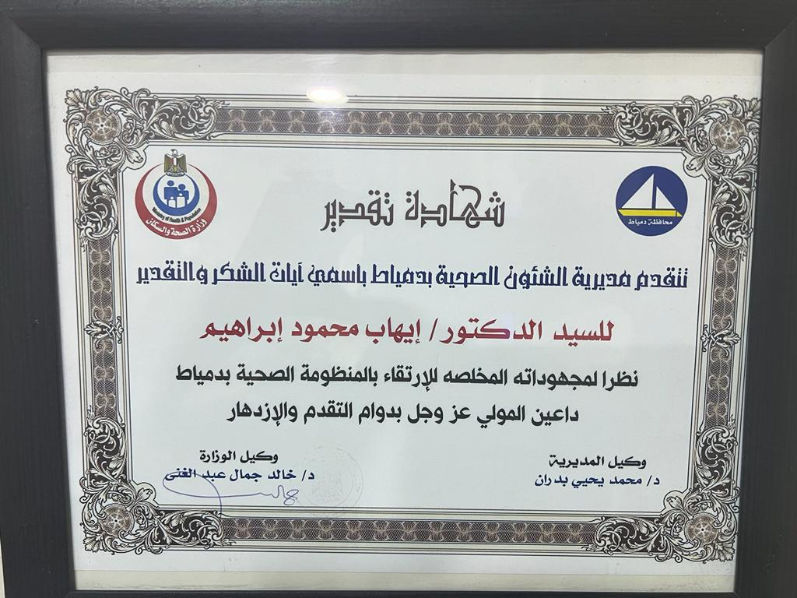
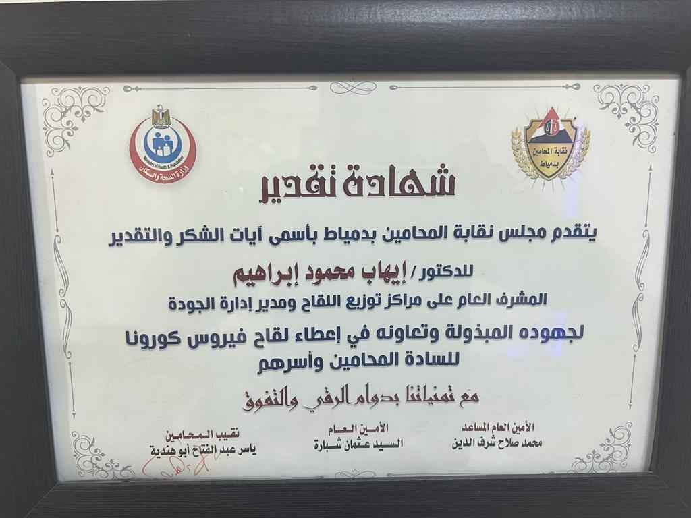
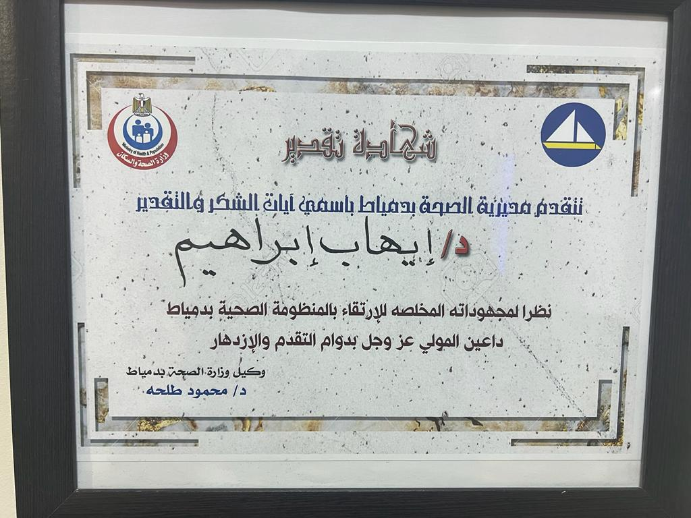
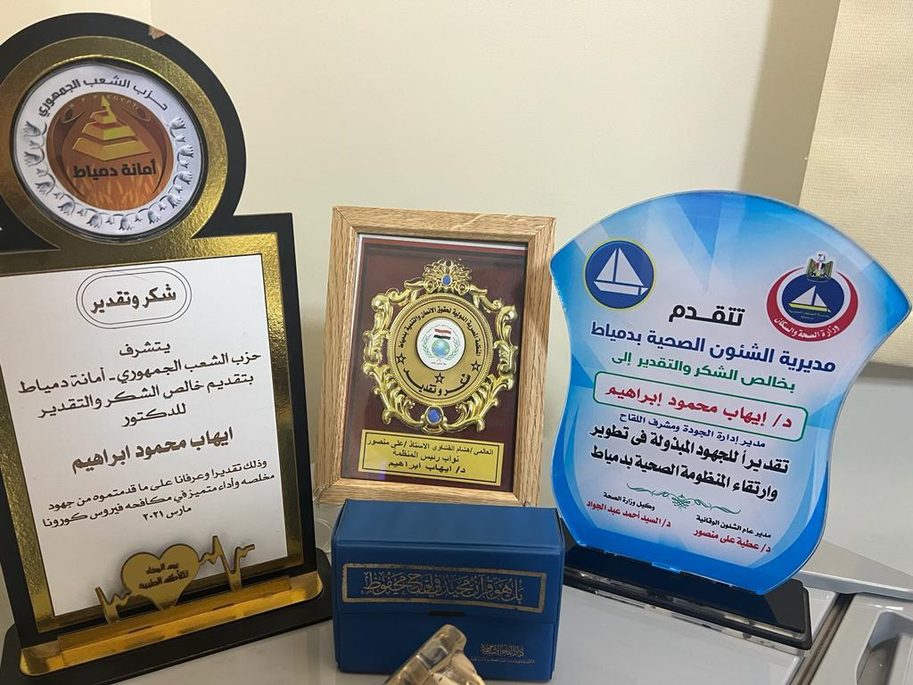

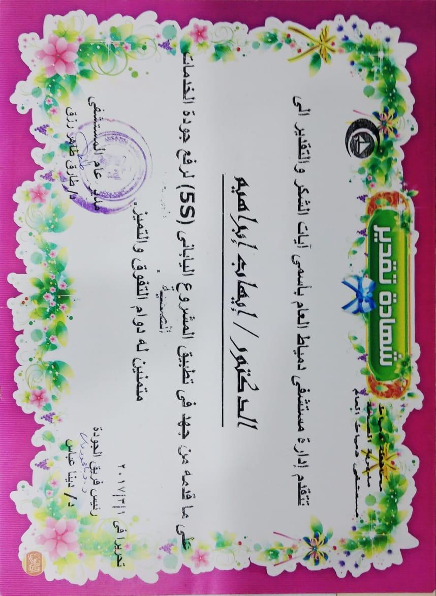
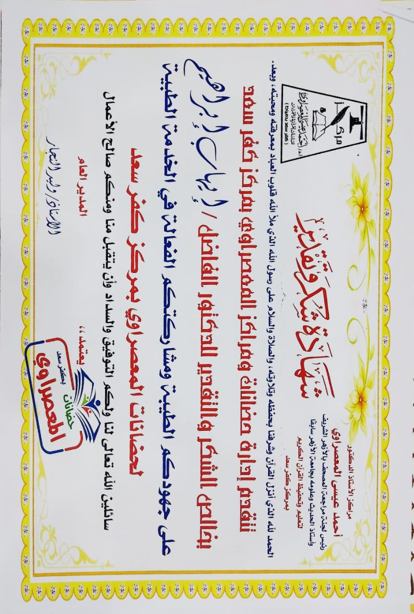
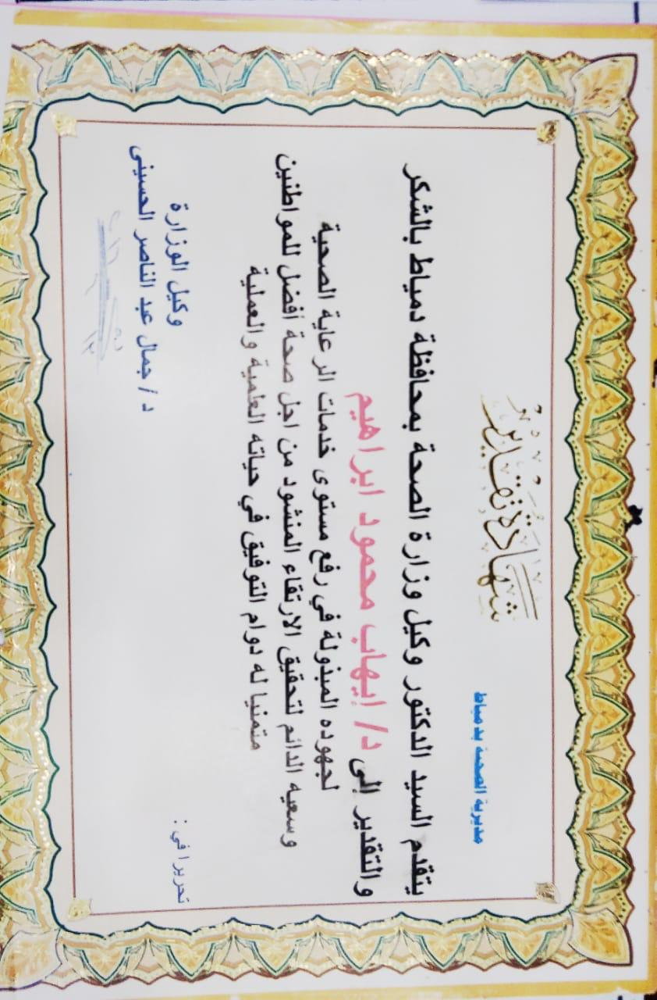
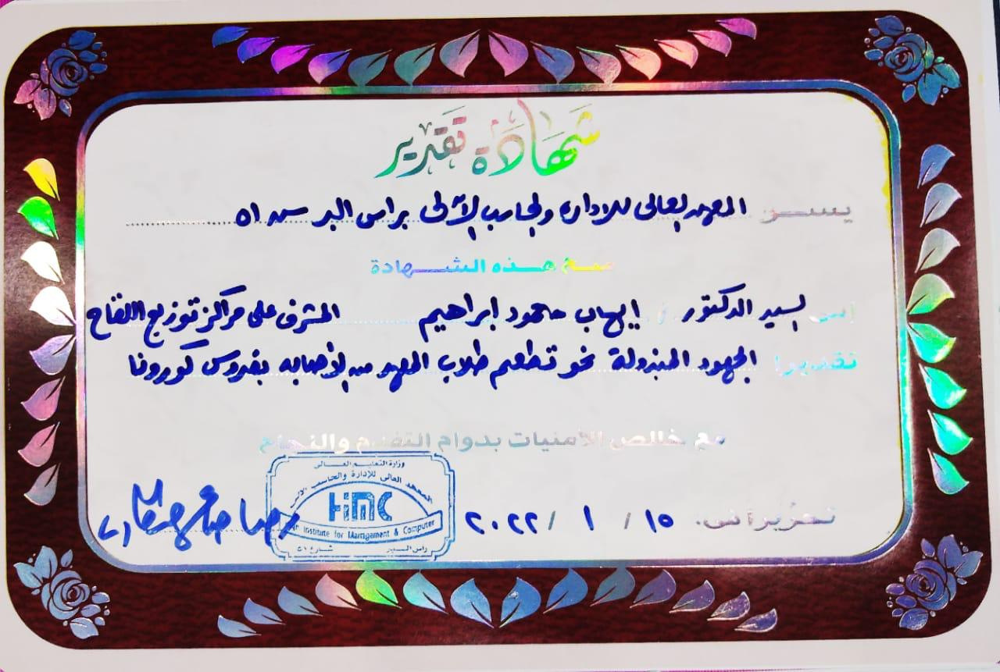
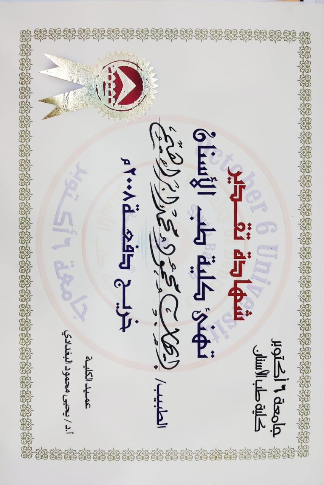
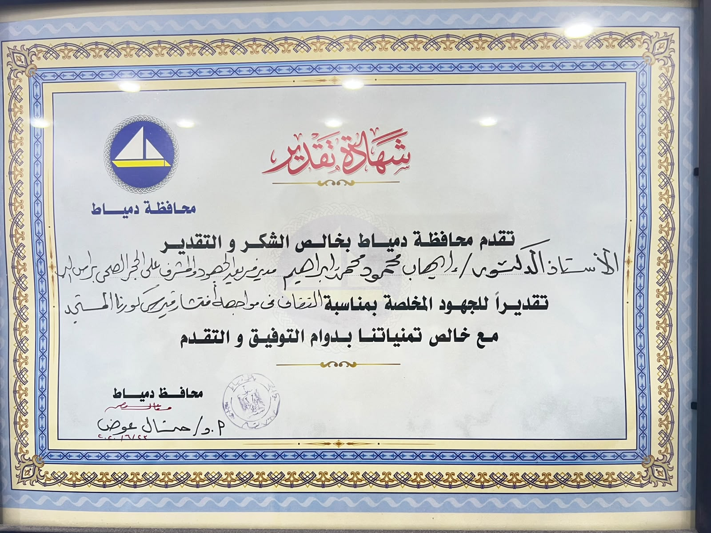
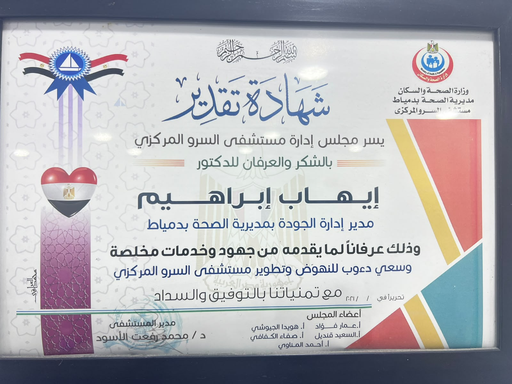